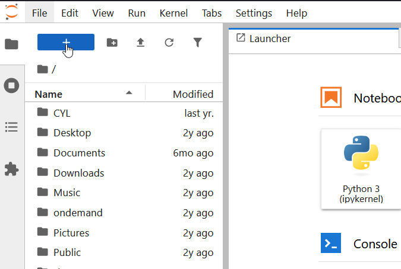
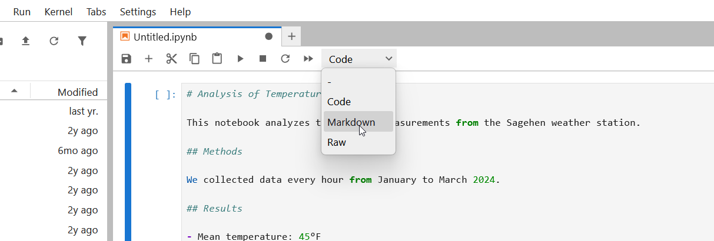
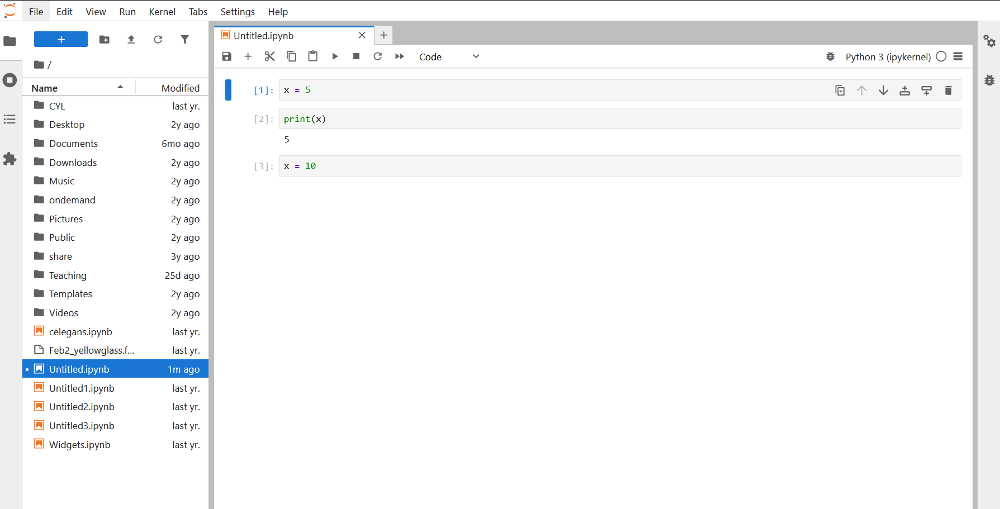

Working with Cells
Last updated on 2026-08-24 | Edit this page
Overview
Questions
- How do I create and edit cells in a notebook?
- What’s the difference between code cells and markdown cells?
- How do I run cells and understand cell execution?
- Why does execution order matter?
Objectives
- Understand the two main cell types (code and markdown)
- Create, edit, and run cells in different ways
- Understand notebook state and execution order
- Use markdown to add rich formatting and documentation
Cell Types in Jupyter
A notebook is a sequence of cells. Each cell has a type that determines what happens when you run it.

Code cells
Code cells contain executable Python code. When you run a code cell:
- The code is sent to the Python kernel (interpreter)
- Python executes the code
- Any output (print statements, plots, results) appears below the cell
- The code has access to all variables from previously executed cells
Example code cell:
When run, this produces output:
x + y = 15Creating Cells
Creating a new cell
Using the menu: 1. Click the “+” button in the toolbar (or use menu: Insert then Insert Cell) 2. By default, new cells are code cells 3. To change to markdown, click the cell and use the dropdown (shows “Code” by default)
Useful keyboard shortcuts
- Ctrl+Shift+A: Insert cell above current cell
- Ctrl+Shift+B: Insert cell below current cell
- Escape then M: Convert current cell to markdown
- Escape then Y: Convert current cell to code
Choosing cell type
When you create a cell, it defaults to code. To change to markdown:
- Click the cell you want to change
- Look for a dropdown in the toolbar that says “Code”
- Click it and select “Markdown” (or “Raw” for raw text)

Or use the keyboard shortcut: press Escape then M (while the cell is selected)
Running Cells
Run a single cell
Click in a cell and press Ctrl+Enter (Windows/Linux) or Cmd+Enter (Mac).
The cell runs and the cursor stays in that cell.
Understanding Execution Order
A key concept: Cells execute in the order you run them, not necessarily top-to-bottom.
Example:
Cell 1: x = 5
Cell 2: print(x) # If I run this first, I'll get an error!
Cell 3: x = 10 # If I run this after Cell 2, x changes to 10If you run Cell 2, then Cell 3, then Cell 2 again, you’ll get different results.
Cell numbers
Each code cell displays a number like [1],
[2], etc., showing the order in which it was
run, not its position in the notebook.

Best practice
Arrange cells logically (top-to-bottom) and run them in order. Don’t jump around. When in doubt, restart the kernel and run all cells from the top to make sure everything works in sequence.
Challenge 1: Create a multi-cell notebook
In your running JupyterLab session: 1. Create a new notebook 2. In
Cell 1 (code): Import libraries
python import numpy as np import matplotlib.pyplot as plt
3. Press Shift+Enter (create new cell and move to it) 4. In Cell 2
(markdown): Add a title ``` # My First Analysis
This notebook demonstrates basic cell operations.
5. Run that markdown cell (Ctrl+Enter) 6. Create Cell 3 (code): Create datapython
x = np.linspace(0, 2*np.pi, 100) y = np.sin(x)
7. Create Cell 4 (code): Plot the datapython plt.plot(x, y)
plt.title(‘Sine Wave’) plt.xlabel(‘x’) plt.ylabel(‘sin(x)’) plt.show()
```
Run all cells. You should see a plot appear below Cell 4.
Expected notebook structure and behavior:
[1] import numpy as np
import matplotlib.pyplot as plt
(Cell runs successfully with no output)
# My First Analysis
This notebook demonstrates basic cell operations.
(Displays as formatted heading and text)
[2] x = np.linspace(0, 2*np.pi, 100)
y = np.sin(x)
(Cell runs successfully with no output)
[3] plt.plot(x, y)
plt.title('Sine Wave')
plt.xlabel('x')
plt.ylabel('sin(x)')
plt.show()
(Cell displays a smooth sine wave plot)This demonstrates the power of notebooks: code, formatted text, and visualizations all in one document!
Challenge 2: Test execution order
In the same notebook: 1. Create a new cell at the end:
python print(f"x has {len(x)} points") print(f"y ranges from {y.min():.2f} to {y.max():.2f}")
2. Run this cell. It works because x and y were defined earlier. 3. Now,
restart the kernel: Click Kernel then Restart
Kernel then Restart 4. Try to run the last
cell again without running the previous cells. 5. You’ll get a
NameError because x and y no longer exist. 6. Now, click
Run then Run All Cells (to run from
the beginning) 7. The error is fixed because all cells ran in order.
This demonstrates why execution order and kernel state matter!
Before restarting: Cell prints
x has 100 points and
y ranges from -1.00 to 1.00.
After restarting, running only the last cell: You
see NameError: name 'x' is not defined because restarting
the kernel clears all variables from memory.
After Run All Cells: Everything works again because Cell 1 defined numpy, Cell 3 created x and y, so the final cell can access them.
Key lesson: Cells depend on each other through kernel state (shared variables). Always run cells top-to-bottom or use “Run All Cells” to ensure dependencies are met.
- Notebooks contain code cells (executable) and markdown cells (formatted text)
- Cells run in the order you execute them, not necessarily top-to-bottom
- The kernel maintains state (variables, imports) across cells
- Always arrange cells logically and run them in order
- Each cell should do one thing; keep cells focused and manageable